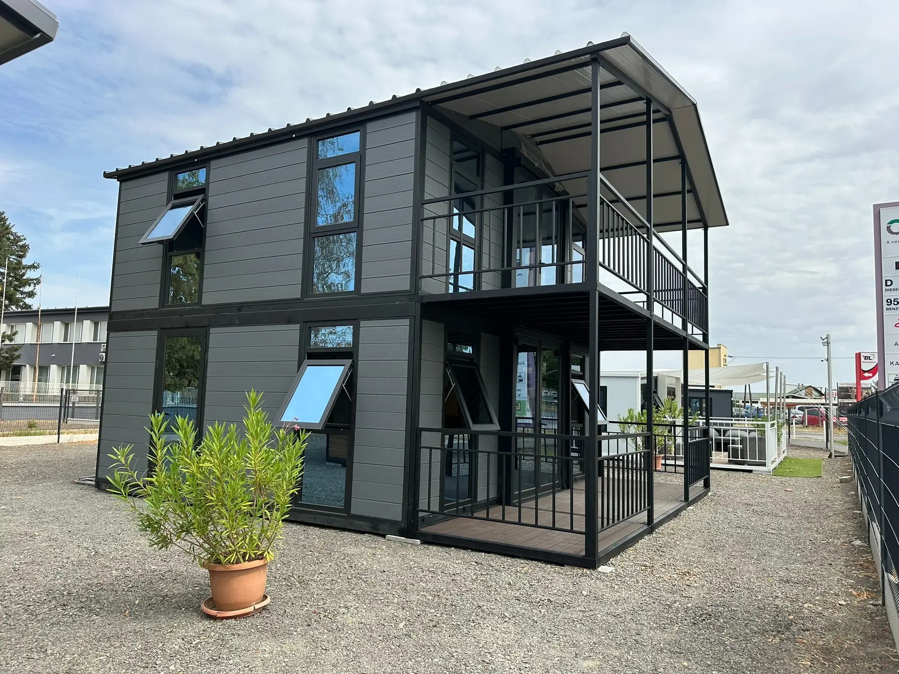

MOBLUX GRAND 70
Két szint.
Két terasz.
Új térélmény.
Közel 70 m²-nyi világos, karakteres élettér nagy üvegfelületekkel és személyre szabható belső kialakítással.
EGY HÁZ, AMELY KIEMELKEDIK
Teljes értékű élettér
két szinten.
A MOBLUX Grand 70 azoknak készült, akik kis telepítési helyigény mellett szeretnének tágas, látványos otthont, vendégházat vagy befektetési célú szálláshelyet.
A szendvicspanel külső burkolat, a nagy dupla üvegezésű nyílászárók és a két terasz kortárs, könnyen felismerhető karaktert adnak.
FŐ JELLEMZŐK
Tágasabb élet,
kompakt alapterületen
A belső elrendezés, a burkolatok és a felszereltség a projekt céljához igazítható.
MODELLFOTÓK ÉS VÁLASZTHATÓ KIALAKÍTÁSOK
A Grand 70 többféle karakterben
Kattintson a képekre a nagyításhoz.
A hosszú fedett oldalteraszos környezetkép illusztráció; a végleges kialakítás és felszereltség minden projektben személyre szabható.
MOBLUX GRAND 70
Alakítsuk az Ön elképzelésére.
Mondja el, milyen célra használná, és összeállítjuk az egyedi műszaki tartalmat.
Ajánlatkérés indítása →